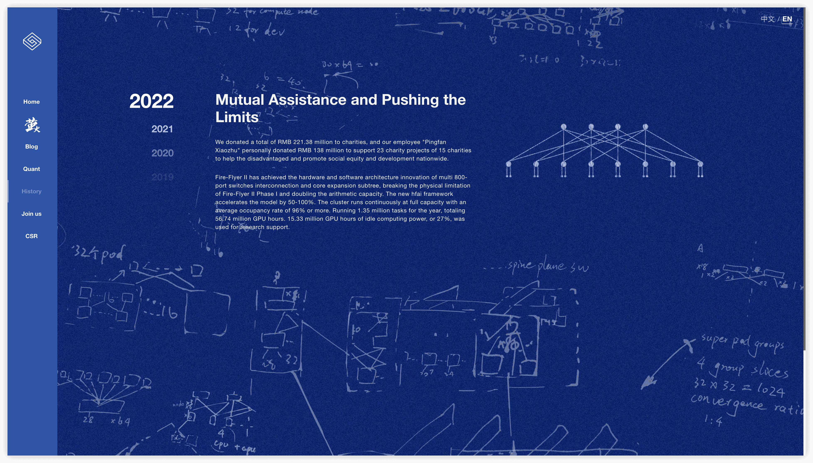
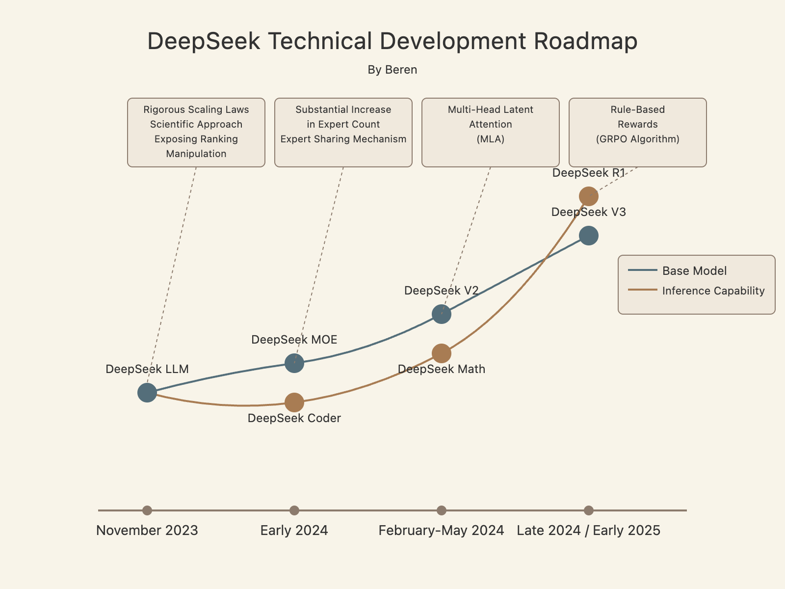
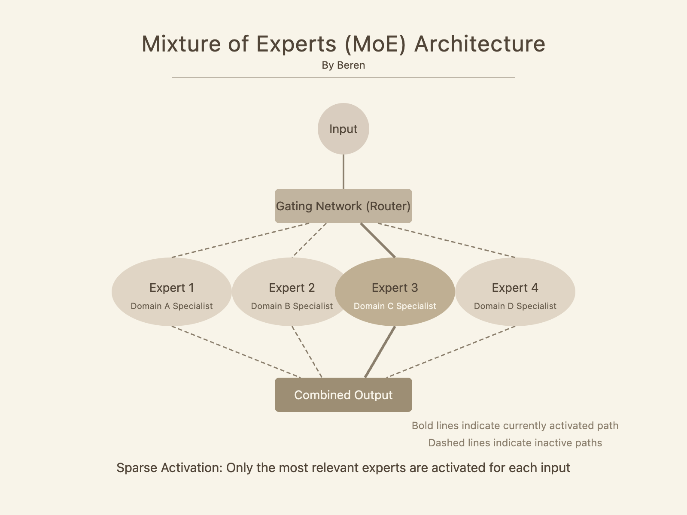
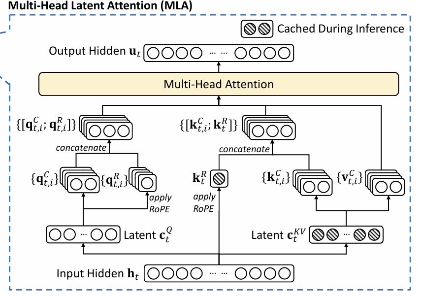
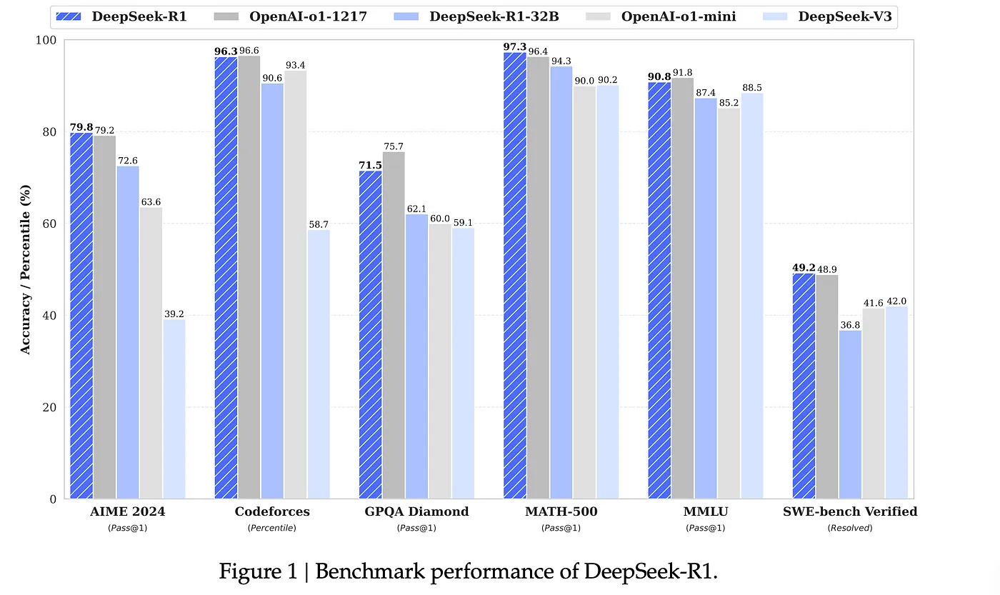

当ChatGPT-3.5首次亮相时，可能没人想到两年后的今天，大模型赛道会如此拥挤。在这场算力与资本的狂飙中，一家名为DeepSeek的中国团队却以独特的工程思维，在OpenAI、Anthropic等巨头的夹缝中杀出血路。
与主流玩家堆参数、冲规模的打法不同，DeepSeek的每一步都写着四个字——「精打细算」。 从量化投资起家的技术底蕴，到惊为天人的训练成本控制，本文将揭示这支「AI特种部队」的逆袭密码。
量化基因与工程底蕴

DeepSeek的故事要从私募基金幻方量化说起。早在2022年AI热潮爆发前，幻方就已坐拥约5000张A100显卡。更令人称奇的是，这些算力最初并非用于自研模型，而是搭建了名为「萤火」的学术算力平台，免费开放给高校科研团队使用。
这个细节暴露了DeepSeek的「技术洁癖」——他们打造的不仅是GPU集群，更是包含智能调度系统、资源优化算法的超级计算机架构。这种工程化思维，后来成为DeepSeek模型研发的DNA。
2023年初，当大模型展现颠覆性潜力时，幻方果断拆分出DeepSeek团队。面对早已拥挤的赛道，这支新军选择了一条与众不同的道路：用开源精神打破技术黑箱。在2023年11月发布首个开源模型时，他们完整公开了技术细节，这种透明度在当时实属罕见。
双轨进化战略

DeepSeek的杀手锏在于「双轨并行」：在基础架构创新与垂直领域增强之间形成飞轮效应。让我们看看他们如何下这盘棋：
基础模型四步跳：
- DeepSeek LLM（2023.11）：在LLaMA架构基础上优化缩放定律，发现传统计算效率公式存在系统性偏差
- DeepSeek MoE（2024.1）：将专家数量提升至64个，首创「共享专家+专业专家」双层结构
- DeepSeek V2（2024.5）：推出MLA注意力机制，KV缓存减少93%，推理速度提升5.76倍
- DeepSeek V3（2024.12）：671B参数规模下，单次推理仅激活30B参数，实现「大模型的小成本」
垂直领域三连击：
- DeepSeek Coder：从标准Decoder到MoE架构的代码模型进化
- DeepSeek Math：无需人工标注的过程监督信号生成技术
- DeepSeek R1：跳过SFT阶段的「零强化学习」方案，用规则奖励直接微调基座模型
这种双轨策略形成了独特的创新循环：架构突破赋能垂直模型，领域洞察反哺基础研究。就像武侠小说中的左右互搏，最终练就独门绝技。
三大核心技术突破
超大规模专家混合模型

图源：专家混合模型视觉指南
当主流MoE模型还在用8-16个专家时，DeepSeek直接祭出64专家起步的「饱和攻击」。这背后有个精妙设计：用少量「共享专家」处理通用任务，海量「专业专家」专注细分领域。
这种设计完美解决了传统MoE的「专家坍缩」问题——就像让全科医生处理常见病，同时配备数百个专科医生应对疑难杂症。实际效果惊人：236B参数的V2模型，单次推理仅激活21B参数，计算需求直降90%。
多头隐式注意力机制（MLA）

图源：技术解析文章
Transformer的注意力机制一直是内存杀手，DeepSeek的解决方案堪称「降维打击」——将高维KV向量压缩到隐空间。用程序员能听懂的话说：
传统注意力：
- 每个token存储h个头部的d维KV向量
- 内存消耗：O(序列长度 × d × h)
MLA方案：
- 每个token只存一个低维隐向量（d_latent << d×h）
- 按需投影还原维度
- 内存消耗：O(序列长度 × d_latent)这项革新让KV缓存减少93%，推理速度提升5.76倍。更妙的是，MLA在减少计算组数的情况下，性能竟优于主流的GQA方案。
GRPO：群体相对策略优化

在强化学习领域，DeepSeek再次展现「减法艺术」。传统RLHF需要策略模型、奖励模型、参考模型、价值模型四件套，而他们提出的GRPO直接砍掉价值网络，通过样本间相对奖励均值实现稳定训练。
在DeepSeek R1中，这种极简主义达到新高度：用规则奖励（如代码测试用例验证）替代神经奖励模型，甚至跳过SFT阶段直接进行强化学习。这打破了「没有SFT就无法RL」的行业共识，犹如用小米加步枪打出了导弹的效果。
工程化降本奇迹

DeepSeek V3的训练成本仅557万美元（2048张H800），相比同行节省一个数量级。秘诀藏在魔鬼细节中：
| 技术点 | 传统方案 | DeepSeek方案 | 效果 |
|---|---|---|---|
| 混合精度训练 | 全程FP16/BF16 | 关键操作使用FP8 | 内存效率翻倍 |
| 专家负载均衡 | 简单路由导致负载不均 | 动态无损平衡算法 | GPU利用率提升35% |
| 通信优化 | 标准All-to-All模式 | 专家-设备映射优化 | 网络开销降低40% |
| 训练稳定性 | 频繁重启检查点 | 单次训练一气呵成 | 算力浪费减少70% |
其中FP8精度运用堪称艺术——在确保数值稳定的前提下，对非关键操作进行激进量化。这需要像外科手术般精准的算子级分析，绝非改个配置参数那么简单。
科研文化与技术哲学
DeepSeek论文中透露的科研气质令人耳目一新。当其他公司还在「刷榜」时，他们主动披露：「如果优化评测指标，我们的中文基准可以再涨20分，但我们选择展示原始分数」。
在DeepSeek Math论文中，他们用整章篇幅分析RL的局限性：「强化学习更像答案排序器，而非真正的思维提升」。这种对技术局限的坦诚，在追求PR效果的AI圈堪称清流。
他们的技术哲学充满「奥卡姆剃刀」精神：能删的组件绝不保留，能简化的流程绝不复杂。当行业沉迷于堆砌模块时，DeepSeek证明：少即是多，简即是优。
启示与未来展望

DeepSeek的逆袭带给行业三点启示：
- 工程效率即护城河：当算力成为军备竞赛，精细化运营比盲目堆料更重要
- 质疑「行业共识」：从百级MoE到零强化学习，突破常来自打破常规
- 长期主义价值观：在开源与闭源的十字路口，选择构建生态而非闭门造车
展望未来，DeepSeek的技术路线可能引领三个趋势：
- 架构创新替代暴力缩放：用百亿参数达成千亿效果
- 端到端强化学习：跳过SFT直接RL微调
- 非自回归生成：突破Transformer的序列生成瓶颈
就在撰写本文时，DeepSeek宣布启动开源周活动。或许当我们再次复盘时，这个团队的工程奇迹才刚刚开始。
延伸阅读
官方资源
图解系列
- A Visual Guide to Mixture of Experts
- DeepSeek V3 Explained: Multi-head Latent Attention
- Why GRPO is Important and How It Works
DS团队源论文
- DeepSeek LLM: Scaling Open-Source Language Models with Longtermism
- DeepSeekMoE: Towards Ultimate Expert Specialization in Mixture-of-Experts Language Models
- DeepSeek-Coder: When the Large Language Model Meets Programming
- DeepSeekMath: Pushing the Limits of Mathematical Reasoning in Open Language Models
- DeepSeek-V2: A Strong, Economical, and Efficient Mixture-of-Experts Language Model
- DeepSeek-Prover: Advancing Theorem Proving in LLMs through Large-Scale Synthetic Data
- DeepSeek-Coder-V2: Breaking the Barrier of Closed-Source Models in Code Intelligence
- DeepSeek-Prover-V1.5: Harnessing Proof Assistant Feedback for Reinforcement Learning and Monte-Carlo Tree Search
- Let the Expert Stick to His Last: Expert-Specialized Fine-Tuning for Sparse Architectural Large Language Models
- DeepSeek-V3 Technical Report
- DeepSeek-R1: Incentivizing Reasoning Capability in LLMs via Reinforcement Learning
其他相关阅读/视频
- IBM - DeepSeek's reasoning AI shows power of small models, efficiently trained
- Group Relative Policy Optimization (GRPO) - Formula and Code
- Mixtral of Experts (Paper Explained)
- DeepSeek R1 Explained to your grandma
- DeepSeek R1 Theory Overview | GRPO + RL + SFT
- Mercury by Inception Labs (Referenced in this post for non-transformer-based LLM approaches)
哎哟，觉得这玩意儿有意思？那可太好了！欢迎随时来跟我唠嗑，咱们可以细说GenAI、LLM这些“生人勿进”的技术话题。当然，骑行，利物浦，如何每次去北欧都能追到极光，怎样才能在斯瓦尔巴/格陵兰岛做半年义工这些好玩一点的也来者不拒。Cheers～ 🌌🚴♂️☕🤖